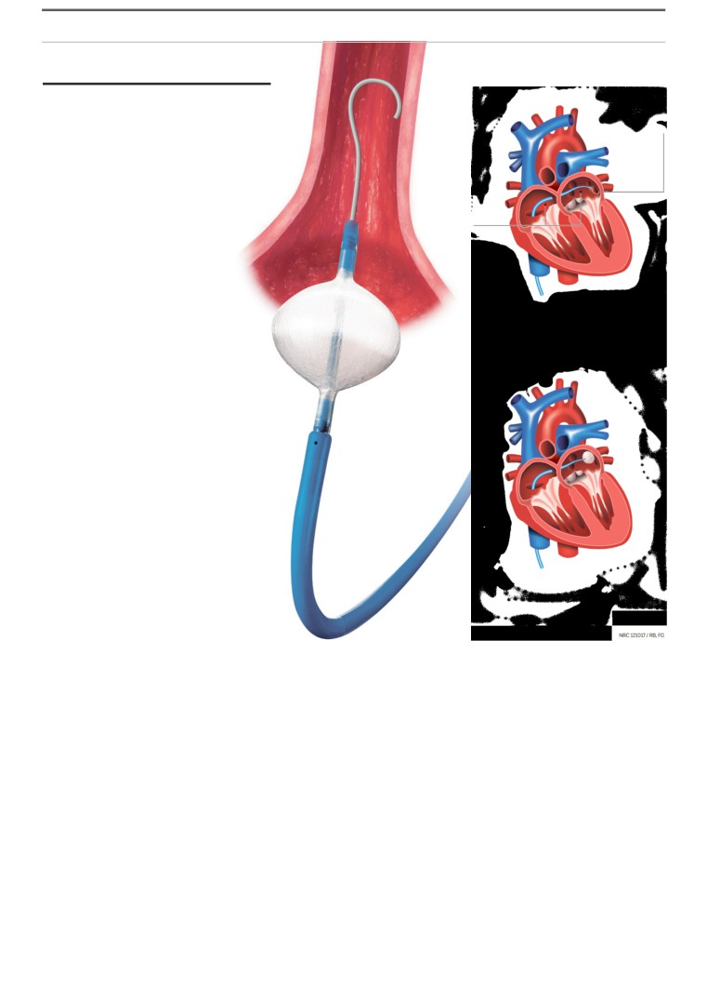

NRC
THURSDAY 12 OCTOBER 2017
Erasmus MC gets a slap on the hand
for heart surgeries with cryoballoon
catheter
By our reporters
taken part in a medical research between 2005 and 2007
Karel Berkhout and Esther Rosenberg
without their knowledge.
12th October 2017
The patients were operated on using a new method - a
cryoballoon catheter - despite no-one knowing how safe
AMSTERDAM. The Erasmus Medical Center
it was. One of the patients barely survived the surgery and
another suffered numerous complications during surgery
(Erasmus MC) in Rotterdam must better
with the balloon.
safeguard the interests of its patients who
The Healthcare Inspectorate has now determined that
participate in medical research. The hospital
the patients participated in a medical research, which the
must also make adjustments to its internal
hospital has continued to deny. Whether the research fell
procedures and investigate the working
within the scope of the Dutch ‘Medical Research Involving
Human Subjects Act’ “cannot be determined”, according to
methods in the cardiology department. These
the Healthcare Inspectorate.
measures have been imposed on the hospital
This finding is a significant one. If a medical research falls
by the Dutch Healthcare Inspectorate.
within the scope of this legislation then patients must be
Over the past few months the Healthcare Inspectorate
extensively informed on the treatment and risks involved,
has carried out an investigation into the use of a new
and must provide written consent prior to participation.
surgery instrument which the hospital introduced in 2005.
This wasn’t the case at the Erasmus MC.
The reason was an article published last autumn in the NRC
which showed that 141 heart patients from the hospital had
[+] Ballon study page 20
1

NRC
THURSDAY 12 OCTOBER 2017
MEDICINE
Standard procedure
Balloon
Disruptive
impulses
study comes
Pulmonary
vein
under fire
Atrium
again.
The inspectorate imposes
measures on the cardiology
A catheter makes it way to the heart via the
department of the Erasmus MC
groin artery. Small scars are made around
after non-thorough introduction
the artery.
of a new treatment for heart
Cryoballoon procedure
rhythm disorder.
By our reporters
Karel Berkhout and Esther Rosenberg
12th October 2017
AMSTERDAM. A firm slap with
a soft hand, is the Dutch Healthcare
Inspectorate’s decision when it came
to the first surgeries with the so-called
cryoballoon catheter in the Erasmus
MC. The Healthcare Inspectorate
imposes measures on the university
medical center in Rotterdam with the
aim of safeguarding patients’ interests
A catheter makes it way to the heart via the
in the department of cardiology. Despite
groin artery. A balloon is expanded at the
this, the Healthcare Inspectorate offers
opening of the artery which is subsequently
no decision on whether the patients
frozen for four minutes. A neat circle of scar
tissue is formed.
should have signed a consent form
for the treatment they received for a
heart rhythm condition, which was a
pioneering one a decade ago.
use.
The method involves inserting
WMO) states that doctors who carry
The Healthcare
Inspectorate
the balloon into the left atrium and
out a medical research must have
has not offered an opinion on this
filling it with nitrogen gas which is
prior consent from the patients and
crucial matter. They say because “it
cooled to a temperature of minus 60
from an accredited medical research
is extremely difficult to reconstruct
degrees Celsius. The scars that are
ethics committee. Despite this, the
the events which took place so long
formed are supposed to present a
Erasmus MC claims that the balloon
ago”. This raises the question what the
blockage for the electrical impulses
catheter ablations were nothing other
Healthcare Inspectorate has actually
which cause the heart to beat rapidly.
than “regular” patient care. Patient
done to find out what took place. Less
Up until the spring of 2007, 141
consent was therefore not necessary.
than they could have done, concludes
patients were treated using this
the report.
method. Their data were used in two
How did the Healthcare Inspec-
scientific articles by Yves van Belle, a
torate tackle the case?
What actually happened?
cardiologist in the Erasmus MC who
After the publication in the NRC
Patients who suffered from a
also used the data for his PhD thesis.
there was a discussion in the Dutch
particular type of heart rhythm
In the NRC article from September
House of Representatives during
condition were treated from August
2016, the experts and researchers
which questions were put to Minister
2005 in the Erasmus MC with the
said that the patients should have
Schippers
(Dutch Liberal Party,
cryoballoon. The balloon had been
signed an informed consent form. The
VVD) of the Ministry of Health,
issued with a CE mark the previous
Dutch Medical Research Involving
Welfare and Sport, who announced
month and was therefore approved for
Human Subjects Act (Dutch abbr.:
the Inspectorate’s investigation.
2
NRC
THURSDAY 12 OCTOBER 2017
The Healthcare Inspectorate began
adopted this standpoint in its report.
patient at the time”, he says. There is
by requesting information from
However, it does say that “the as yet
a recording of the interviews with Van
the Erasmus MC which they then
undetermined risks of the cryoballoon
Belle and Jordaens.
submitted to the CCMO for advice.
catheter could have been better
It appears that the Healthcare
The CCMO is the national committee
managed” in a clinical trial which fell
Inspectorate also didn’t check
which has supervision over all of the
under the scope of the WMO.
the documents sufficiently. For
accredited medical research ethics
example, the Erasmus MC argued
committees. The committee had
Can the Inspectorate’s decision
that the balloon technique was not
to determine whether the balloon
on the past be disputed?
a new one on the grounds of an
catheter ablations fell within the
It seems that way. The Healthcare
article published in the journal,
scope of the legislation and whether
Inspectorate mainly limited itself
the Maastricht UMC
(Circulation,
the patients should have signed an
to studying documents, insofar as
2004). However, that article was
informed consent.
they were still available. When it
on a surgical procedure with a cryo-
To determine this, the committee
came to interviewing those involved,
catheter, not with a cryoballoon. The
checked whether the two applicable
the
Healthcare
Inspectorate
Healthcare Inspectorate didn’t offer
criteria applied. Firstly the question
only requested information from
any comments on the article.
is whether the research is being
representatives of the Erasmus MC.
carried out with the aim of “increasing
The then PhD student Van Belle and
How has the Healthcare
medical knowledge which can be
his promotor, professor of cardiology
Inspectorate responded to this
applied to populations other than
Luc Jordaens, were not interviewed.
criticism?
the direct research population”. That
They were the ones that carried out
In a reaction the Healthcare
was the case according to the CCMO,
the ablations and the studies. They
Inspectorate said that its investigation
which based its decision on Van Belle’s
could have shed more light on the
was not aimed at the
“process of
article on the 141 patients (Europace,
case.
subsequently establishing the truth”,
2008). The article states that the aim
For example, on the extra
though at “the quality and safety of
was to gather data on the safety and
procedures which the patients did or
the health care”: which
“currently
effectiveness of the balloon.
did not have to carry out within the
meets the necessary requirements at
The second criteria concerned what
realm of the medical research. Not
the Erasmus MC”.
was expected of patients post-surgery,
only did the patients have to forward
Despite the findings, in a letter by
such as passing on their heart rhythm
a brief recording of their heart rhythm
the Erasmus MC which accompanies
every day to the hospital and filling in
every day to the hospital, though
the Healthcare Inspectorate’s report,
questionnaires. If these procedures
they also had to make a
24-hour
it displayed dissatisfaction at the
were carried out specifically within
recording once in a while with a kind
outcome, as the report declares that
the realm of the research, then it fell
of measuring unit, a so-called Holter.
the balloon studies were indeed
within the scope of the WMO. If the
When asked about this, Jordaens told
medical research. The fact that one of
procedures were part of the regular
this newspaper last September: “We
the 141 patients has started a damage
care provided, then it didn’t. According
should have informed the accredited
claim against the hospital possibly
to the committee, the difference
medical research ethics committee
plays a role in this dissatisfaction.
cannot be determined in this case.
that we were planning on Holtering
There was no available clinical trial
the patients three, six and twelve
protocol or clear treatment protocol
months post-surgery. Nowadays
present. Furthermore, the decision
that is standard care in line with the
made by the Erasmus MC to use the
guidelines, though it wasn’t then
balloon was not officially documented.
which means it was an extra burden
And therefore the committee is
[for the patient, ed.].”
unable to determine whether the
Van Belle made the assumption
patients should have provided written
that the patients had provided
consent. The Healthcare Inspectorate
consent. “I didn’t ask each and every
This article is a translation of the
news that was published in the Dutch
newspaper NRC Handelsblad on
Thursday October 12th 2017 with
permission from the publisher.
3